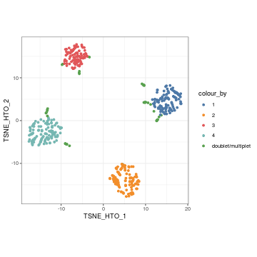
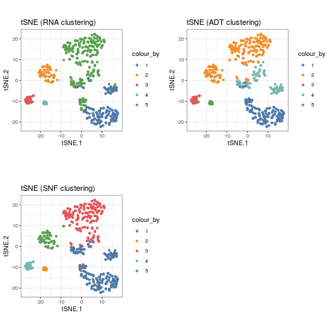
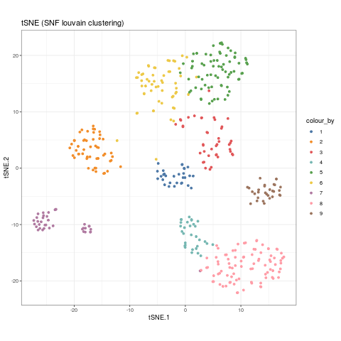
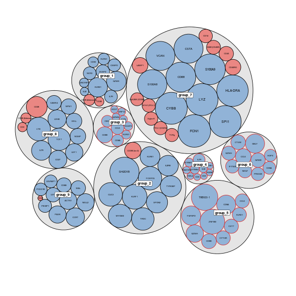
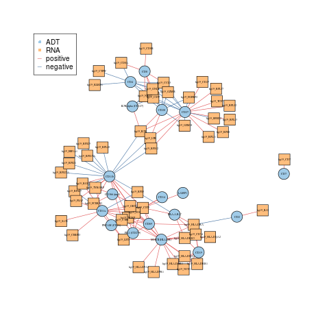
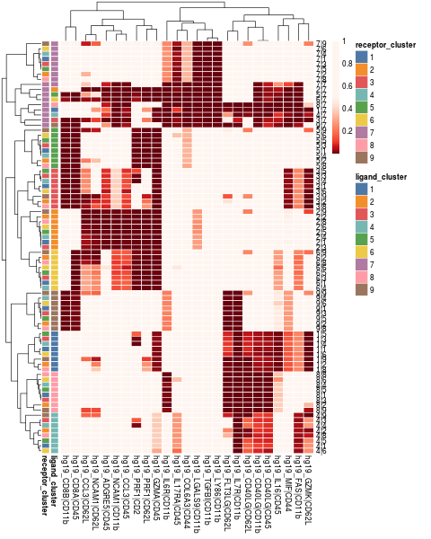
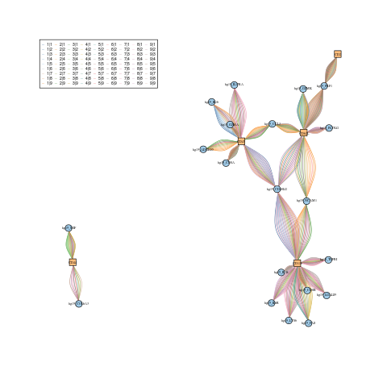

CiteFuse: getting start
CiteFuse.RmdIntroduction
CiteFuse is a computational framework that implements a suite of methods and tools for CITE-seq data from pre-processing through to integrative analytics. This includes doublet detection, network-based modality integration, cell type clustering, differential RNA and ADT expression analysis, ADT evaluation, ligand-receptor interaction analysis, and interactive web-based visualisation of the analyses. this vignette demostrates the usage of CiteFuse using a small subset data of CITE-seq data from PBMC as an example (Mimitou et al., 2019).
## [1] "RNA" "ADT" "HTO"## $RNA
## [1] 19521 500
##
## $ADT
## [1] 49 500
##
## $HTO
## [1] 4 500Here, we started from a list of three matrices of RNA, ADT and HTO, which have common cell names. The preprocessing function will utilise the three matrices and its common cell names to create a SingleCellExperiment object, which stores RNA data in assay, and ADT, HTO data in altExp slot.
## class: SingleCellExperiment
## dim: 19521 500
## metadata(0):
## assays(1): counts
## rownames(19521): hg19_AL627309.1 hg19_AL669831.5 ... hg19_MT-ND6
## hg19_MT-CYB
## rowData names(0):
## colnames(500): AAGCCGCGTTGTCTTT GATCGCGGTTATCGGT ... TTGGCAACACTAGTAC
## GCTGCGAGTTGTGGCC
## colData names(0):
## reducedDimNames(0):
## spikeNames(0):
## altExpNames(2): ADT HTO
Detecting both cross- and within-sample doublets using CiteFuse
HTO Normalisation and Visualisation
The function notmaliseExprs is used to scale the alternative expression. Here, we used it to perform log-transformation for the HTO expression, by setting transform = "log".
Then we can perform dimension reduction on the HTO expression using runTSNE or runUMAP, then use visualiseDim function to visualise the reduced dimension plot.
sce_citeseq <- scater::runTSNE(sce_citeseq,
altexp = "HTO",
name = "TSNE_HTO",
pca = TRUE)
visualiseDim(sce_citeseq,
dimNames = "TSNE_HTO") + labs(title = "tSNE (HTO)")
sce_citeseq <- scater::runUMAP(sce_citeseq,
altexp = "HTO",
name = "UMAP_HTO")
visualiseDim(sce_citeseq,
dimNames = "UMAP_HTO") + labs(title = "UMAP (HTO)")
Doublet Identification (cross sample)
We first identify the cross-sample doublets via function crossSampleDoublets.
## number of iterations= 20
## number of iterations= 24
## number of iterations= 46
## number of iterations= 50The results of the cross sample doublets are then saved in the colData as doubletClassify_between_label and doubletClassify_between_class.
##
## 1 2 3 4
## 115 121 92 129
## doublet/multiplet
## 43##
## doublet/multiplet Singlet
## 43 457We can then highlights the cross-sample doublets in our tSNE plot of HTO expression.

Further, plotHTO function allows us to plot the pairwise scatter HTO expression.

Doublet Identification (within samples)
We then identify the within-sample doublets via function withinSampleDoublets.
The results of the cross sample doublets are then saved in the colData as doubletClassify_within_label and doubletClassify_within_class.
##
## Doublets(Within)_1 Doublets(Within)_2 Doublets(Within)_3 Doublets(Within)_4
## 3 7 4 6
## NotDoublets(Within)
## 480##
## Doublet Singlet
## 20 480
Finally, we can filter out the doublets cells (Both within and between batches) for the downstream analysis.
sce_citeseq <- sce_citeseq[, sce_citeseq$doubletClassify_within_class == "Singlet" & sce_citeseq$doubletClassify_between_class == "Singlet"]
sce_citeseq## class: SingleCellExperiment
## dim: 19521 437
## metadata(3): doubletClassify_between_threshold
## doubletClassify_between_resultsMat doubletClassify_within_resultsMat
## assays(1): counts
## rownames(19521): hg19_AL627309.1 hg19_AL669831.5 ... hg19_MT-ND6
## hg19_MT-CYB
## rowData names(0):
## colnames(437): GATCGCGGTTATCGGT GGCTGGTAGAGGTTAT ... TTGGCAACACTAGTAC
## GCTGCGAGTTGTGGCC
## colData names(5): doubletClassify_between_label
## doubletClassify_between_class nUMI doubletClassify_within_label
## doubletClassify_within_class
## reducedDimNames(2): TSNE_HTO UMAP_HTO
## spikeNames(0):
## altExpNames(2): ADT HTOClustering
Performing SNF
## Calculating affinity matrix
## Performing SNF## user system elapsed
## 2.385 0.150 2.535Performing spectral clustering
## Computing Spectral Clustering
## Computing Diffusion Coordinates
## Used default value: 20 dimensions
## [1] 5## Computing Spectral Clustering
## Computing Diffusion Coordinates
## Used default value: 5 dimensionssce_citeseq$SNF_W_clust <- as.factor(SNF_W_clust$labels)
SNF_W1_clust <- spectralClustering(metadata(sce_citeseq)[["ADT_W"]], K = 5)## Computing Spectral Clustering
## Computing Diffusion Coordinates
## Used default value: 5 dimensionssce_citeseq$ADT_clust <- as.factor(SNF_W1_clust$labels)
SNF_W2_clust <- spectralClustering(metadata(sce_citeseq)[["RNA_W"]], K = 5)## Computing Spectral Clustering
## Computing Diffusion Coordinates
## Used default value: 5 dimensionsVisualisation
sce_citeseq <- reducedDimSNF(sce_citeseq,
method = "tSNE",
dimNames = "tSNE_joint")
g1 <- visualiseDim(sce_citeseq, dimNames = "tSNE_joint", colour_by = "SNF_W_clust") +
labs(title = "tSNE (SNF clustering)")
g2 <- visualiseDim(sce_citeseq, dimNames = "tSNE_joint", colour_by = "ADT_clust") +
labs(title = "tSNE (ADT clustering)")
g3 <- visualiseDim(sce_citeseq, dimNames = "tSNE_joint", colour_by = "RNA_clust") +
labs(title = "tSNE (RNA clustering)")
library(gridExtra)
grid.arrange(g3, g2, g1, ncol = 2)
Louvain Clustering
## SNF_W_louvain
## 1 2 3 4 5 6 7 8 9
## 30 38 80 29 90 37 52 29 52sce_citeseq$SNF_W_louvain <- as.factor(SNF_W_louvain)
visualiseDim(sce_citeseq, dimNames = "tSNE_joint", colour_by = "SNF_W_louvain") +
labs(title = "tSNE (SNF louvain clustering)")

Differential Expression Analysis
Exploration of features expression
visualiseExprs(sce_citeseq,
plot = "boxplot",
group_by = "SNF_W_louvain",
feature_subset = c("hg19_CD2", "hg19_CD4", "hg19_CD8A", "hg19_CD19"))
visualiseExprs(sce_citeseq,
plot = "violin",
group_by = "SNF_W_louvain",
feature_subset = c("hg19_CD2", "hg19_CD4", "hg19_CD8A", "hg19_CD19"))
visualiseExprs(sce_citeseq,
plot = "jitter",
group_by = "SNF_W_louvain",
feature_subset = c("hg19_CD2", "hg19_CD4", "hg19_CD8A", "hg19_CD19"))
visualiseExprs(sce_citeseq,
plot = "density",
group_by = "SNF_W_louvain",
feature_subset = c("hg19_CD2", "hg19_CD4", "hg19_CD8A", "hg19_CD19"))
sce_citeseq <- normaliseExprs(sce_citeseq, altExp_name = "ADT", transform = "log")
visualiseExprs(sce_citeseq,
altExp_name = "ADT",
n = 30) +
coord_flip()
visualiseExprs(sce_citeseq,
altExp_name = "ADT",
group_by = "SNF_W_louvain",
plot = "violin", n = 5)
visualiseExprs(sce_citeseq, altExp_name = "ADT",
plot = "jitter",
group_by = "SNF_W_louvain",
feature_subset = c("CD2", "CD8", "CD4", "CD19"))
visualiseExprs(sce_citeseq, altExp_name = "ADT",
plot = "density",
group_by = "SNF_W_louvain",
feature_subset = c("CD2", "CD8", "CD4", "CD19"))
visualiseExprs(sce_citeseq, altExp_name = "ADT",
plot = "pairwise",
feature_subset = c("CD4", "CD8"))## number of iterations= 10
## number of iterations= 18
visualiseExprs(sce_citeseq, altExp_name = "ADT",
plot = "pairwise",
feature_subset = c("CD45RA", "CD4", "CD8"), threshold = rep(4, 3))
Perform DE analysis using Wilcoxon Rank Sum test
For RNA expression
# DE will be performed for RNA if altExp_name = "none"
sce_citeseq <- DEgenes(sce_citeseq,
altExp_name = "none",
group = sce_citeseq$SNF_W_louvain,
return_all = TRUE,
exprs_pct = 0.5)
sce_citeseq <- selectDEgenes(sce_citeseq,
altExp_name = "none")
datatable(format(do.call(rbind, metadata(sce_citeseq)[["DE_res_RNA_filter"]]),
digits = 2))Visualising DE results
circlepackPlot
rna_DEgenes <- metadata(sce_citeseq)[["DE_res_RNA_filter"]]
adt_DEgenes <- metadata(sce_citeseq)[["DE_res_ADT_filter"]]
rna_DEgenes <- lapply(rna_DEgenes, function(x){
x$name <- gsub("hg19_", "", x$name)
x})
DEbubblePlot(list(RNA = rna_DEgenes, ADT = adt_DEgenes))
DEcomparisonPlot
rna_list <- c("hg19_CD4",
"hg19_CD8A",
"hg19_HLA-DRB1",
"hg19_ITGAX",
"hg19_NCAM1",
"hg19_CD27",
"hg19_CD19")
adt_list <- c("CD4", "CD8", "MHCII (HLA-DR)", "CD11c", "CD56", "CD27", "CD19")
rna_DEgenes_all <- metadata(sce_citeseq)[["DE_res_RNA"]]
adt_DEgenes_all <- metadata(sce_citeseq)[["DE_res_ADT"]]
feature_list <- list(RNA = rna_list, ADT = adt_list)
de_list <- list(RNA = rna_DEgenes_all, ADT = adt_DEgenes_all)
DEcomparisonPlot(de_list = de_list,
feature_list = feature_list)
ADT importance evaluation
set.seed(2020)
sce_citeseq <- importanceADT(sce_citeseq,
group = sce_citeseq$SNF_W_louvain,
subsample = TRUE)
visImportance(sce_citeseq, plot = "boxplot")

## CD4 CD8 CD27 CD5
## 30.558333 29.224077 27.691326 22.097058
## CD7 PECAM (CD31) CD11b CD2
## 16.041289 13.495346 12.716874 12.241439
## MHCII (HLA-DR) CD28 CD44 IL7Ralpha (CD127)
## 10.332952 10.189411 9.006814 8.808518
## HLA-A,B,C CD62L CD11c CD45RA
## 6.961884 5.921209 5.678501 5.612525
## CD366 (tim3) CD3 CD56 PD-1 (CD279)
## 5.294986 5.263878 4.732472 4.427862Select the ADT with scores greater than 5 and perform SNF again
## [1] "CD11b" "CD11c" "CD2"
## [4] "CD27" "CD28" "CD3"
## [7] "CD366 (tim3)" "CD4" "CD44"
## [10] "CD45RA" "CD5" "CD62L"
## [13] "CD7" "CD8" "HLA-A,B,C"
## [16] "IL7Ralpha (CD127)" "MHCII (HLA-DR)" "PECAM (CD31)"system.time(sce_citeseq <- CiteFuse(sce_citeseq,
ADT_subset = subset_adt,
metadata_names = c("W_SNF_adtSubset1",
"W_ADT_adtSubset1",
"W_RNA")))## Calculating affinity matrix
## Performing SNF## user system elapsed
## 1.968 0.040 2.010## Computing Spectral Clustering
## Computing Diffusion Coordinates
## Used default value: 5 dimensionssce_citeseq$SNF_W_clust_adtSubset1 <- as.factor(SNF_W_clust_adtSubset1$labels)
library(mclust)
adjustedRandIndex(sce_citeseq$SNF_W_clust_adtSubset1, sce_citeseq$SNF_W_clust)## [1] 0.9305236Gene - ADT network
RNA_feature_subset <- unique(as.character(unlist(lapply(rna_DEgenes_all, "[[", "name"))))
ADT_feature_subset <- unique(as.character(unlist(lapply(adt_DEgenes_all, "[[", "name"))))
geneADTnetwork(sce_citeseq,
RNA_feature_subset = RNA_feature_subset,
ADT_feature_subset = ADT_feature_subset,
cor_method = "pearson",
network_layout = igraph::layout_with_fr)
## IGRAPH 0f20910 UN-B 72 134 --
## + attr: name (v/c), label (v/c), class (v/c), type (v/l), shape (v/c),
## | color (v/c), size (v/n), label.cex (v/n), label.color (v/c), value
## | (e/n), color (e/c), weights (e/n)
## + edges from 0f20910 (vertex names):
## [1] RNA_hg19_IL7R --ADT_CD28
## [2] RNA_hg19_LTB --ADT_CD28
## [3] RNA_hg19_NKG7 --ADT_CD28
## [4] RNA_hg19_CST7 --ADT_CD28
## [5] RNA_hg19_GNLY --ADT_CD28
## [6] RNA_hg19_CCL5 --ADT_CD28
## + ... omitted several edgesRNA Ligand - ADT Receptor Analysis
## [,1] [,2]
## [1,] "hg19_IL17RA" "CD45"
## [2,] "hg19_FAS" "CD11b"
## [3,] "hg19_GZMK" "CD62L"
## [4,] "hg19_CD40LG" "CD11b"
## [5,] "hg19_FLT3LG" "CD62L"
## [6,] "hg19_GZMA" "CD19"sce_citeseq <- normaliseExprs(sce = sce_citeseq,
altExp_name = "ADT",
transform = "zi_minMax")
sce_citeseq <- normaliseExprs(sce = sce_citeseq,
altExp_name = "none",
exprs_value = "logcounts",
transform = "minMax")
sce_citeseq <- ligandReceptorTest(sce = sce_citeseq,
ligandReceptor_list = lr_pair_subset,
cluster = sce_citeseq$SNF_W_louvain,
RNA_exprs_value = "minMax",
use_alt_exp = TRUE,
altExp_name = "ADT",
altExp_exprs_value = "zi_minMax",
num_permute = 1000) ## 100 ......200 ......300 ......400 ......500 ......600 ......700 ......800 ......900 ......1000 ......




Analysis cross condtions
Here we will jointly analysis the current data in control condtion, with the another subset in CTCL condition from Mimitou et al.. The data sce_ctcl_subset provided in CiteFuse package already contain the clustering inforamtion.
To visualise jointly gene or protein expression data, we can use visualiseExprsList function.
visualiseExprsList(sce_list = list(control = sce_citeseq,
ctcl = sce_ctcl_subset),
plot = "boxplot",
altExp_name = "none",
exprs_value = "logcounts",
feature_subset = c("hg19_S100A10", "hg19_CD8A"),
group_by = c("SNF_W_louvain", "SNF_W_louvain"))
visualiseExprsList(sce_list = list(control = sce_citeseq,
ctcl = sce_ctcl_subset),
plot = "boxplot",
altExp_name = "ADT",
feature_subset = c("CD19", "CD8"),
group_by = c("SNF_W_louvain", "SNF_W_louvain"))
We can then perform differential expression analysis in RNA epxression level across the two clusters that have high CD19 expression in ADT.
de_res <- DEgenesCross(sce_list = list(control = sce_citeseq,
ctcl = sce_ctcl_subset),
colData_name = c("SNF_W_louvain", "SNF_W_louvain"),
group_to_test = c("2", "6"))
de_res_filter <- selectDEgenes(de_res = de_res)
de_res_filter## $control
## stats.W pval p.adjust meanExprs.1 meanExprs.2 meanPct.1
## hg19_NKG7 82.0 9.717299e-13 9.717299e-13 0.51066894 3.2333024 0.30232558
## hg19_CST7 138.0 5.875063e-12 5.875063e-12 0.22512314 2.2146495 0.13953488
## hg19_GNLY 186.0 8.935760e-12 8.935760e-12 0.07220401 2.7782587 0.02325581
## hg19_CCL5 124.0 2.418174e-11 2.418174e-11 1.04348029 3.7809281 0.37209302
## hg19_GZMH 258.0 1.807873e-10 1.807873e-10 0.00000000 1.4711399 0.00000000
## hg19_ITGB2 210.0 4.203966e-09 4.203966e-09 0.44185664 1.7346818 0.44186047
## hg19_KLRD1 322.5 5.000482e-08 5.000482e-08 0.09327555 1.0358615 0.09302326
## hg19_GZMA 284.5 5.732252e-08 5.732252e-08 0.32515702 1.5433119 0.18604651
## hg19_ZEB2 387.0 7.878997e-08 7.878997e-08 0.00000000 0.8211807 0.00000000
## hg19_CD99 274.0 1.679625e-07 1.679625e-07 0.58551572 1.5699157 0.46511628
## meanPct.2 meanDiff pctDiff name group
## hg19_NKG7 1.0000000 0.6976744 0.6976744 hg19_NKG7 control
## hg19_CST7 0.8947368 0.7552020 0.7552020 hg19_CST7 control
## hg19_GNLY 0.7894737 0.7662179 0.7662179 hg19_GNLY control
## hg19_CCL5 1.0000000 0.6279070 0.6279070 hg19_CCL5 control
## hg19_GZMH 0.6842105 0.6842105 0.6842105 hg19_GZMH control
## hg19_ITGB2 0.8684211 0.4265606 0.4265606 hg19_ITGB2 control
## hg19_KLRD1 0.6578947 0.5648715 0.5648715 hg19_KLRD1 control
## hg19_GZMA 0.8157895 0.6297430 0.6297430 hg19_GZMA control
## hg19_ZEB2 0.5263158 0.5263158 0.5263158 hg19_ZEB2 control
## hg19_CD99 0.8947368 0.4296206 0.4296206 hg19_CD99 control
##
## $ctcl
## stats.W pval p.adjust meanExprs.1 meanExprs.2
## hg19_RPS26 0.0 1.087530e-14 1.087530e-14 1.42819970 5.072471
## hg19_LTB 235.0 1.478865e-08 1.478865e-08 0.48566164 1.978730
## hg19_SELL 298.5 3.618421e-08 3.618421e-08 0.10674144 1.152572
## hg19_LEPROTL1 268.0 9.163954e-08 9.163954e-08 0.37427389 1.300745
## hg19_NOSIP 306.0 2.589055e-07 2.589055e-07 0.23412389 1.157235
## hg19_LINC02446 352.0 3.887845e-07 3.887845e-07 0.09889831 1.004083
## hg19_FOS 353.5 5.438707e-07 5.438707e-07 0.14088922 1.125337
## hg19_TMEM123 331.0 1.090629e-06 1.090629e-06 0.26112624 1.012034
## hg19_LDHB 325.0 2.344648e-06 2.344648e-06 0.70148411 1.588459
## hg19_NPM1 323.0 2.836125e-06 2.836125e-06 1.24903807 2.202268
## meanPct.1 meanPct.2 meanDiff pctDiff name group
## hg19_RPS26 0.84210526 1.0000000 0.1578947 0.1578947 hg19_RPS26 ctcl
## hg19_LTB 0.28947368 0.9069767 0.6175031 0.6175031 hg19_LTB ctcl
## hg19_SELL 0.07894737 0.6976744 0.6187271 0.6187271 hg19_SELL ctcl
## hg19_LEPROTL1 0.28947368 0.9069767 0.6175031 0.6175031 hg19_LEPROTL1 ctcl
## hg19_NOSIP 0.21052632 0.7674419 0.5569155 0.5569155 hg19_NOSIP ctcl
## hg19_LINC02446 0.07894737 0.6279070 0.5489596 0.5489596 hg19_LINC02446 ctcl
## hg19_FOS 0.07894737 0.6511628 0.5722154 0.5722154 hg19_FOS ctcl
## hg19_TMEM123 0.23684211 0.7674419 0.5305998 0.5305998 hg19_TMEM123 ctcl
## hg19_LDHB 0.50000000 0.8604651 0.3604651 0.3604651 hg19_LDHB ctcl
## hg19_NPM1 0.68421053 0.9534884 0.2692778 0.2692778 hg19_NPM1 ctclSessionInfo
## R version 3.6.1 (2019-07-05)
## Platform: x86_64-apple-darwin15.6.0 (64-bit)
## Running under: macOS Catalina 10.15.3
##
## Matrix products: default
## BLAS: /Library/Frameworks/R.framework/Versions/3.6/Resources/lib/libRblas.0.dylib
## LAPACK: /Library/Frameworks/R.framework/Versions/3.6/Resources/lib/libRlapack.dylib
##
## locale:
## [1] en_AU.UTF-8/en_AU.UTF-8/en_AU.UTF-8/C/en_AU.UTF-8/en_AU.UTF-8
##
## attached base packages:
## [1] parallel stats4 stats graphics grDevices utils datasets
## [8] methods base
##
## other attached packages:
## [1] mclust_5.4.5 gridExtra_2.3
## [3] DT_0.10 scater_1.14.4
## [5] ggplot2_3.2.1 SingleCellExperiment_1.8.0
## [7] SummarizedExperiment_1.16.0 DelayedArray_0.12.0
## [9] BiocParallel_1.20.0 matrixStats_0.55.0
## [11] Biobase_2.46.0 GenomicRanges_1.38.0
## [13] GenomeInfoDb_1.22.0 IRanges_2.20.1
## [15] S4Vectors_0.24.3 BiocGenerics_0.32.0
## [17] CiteFuse_0.1.0
##
## loaded via a namespace (and not attached):
## [1] Rtsne_0.15 ggbeeswarm_0.6.0 colorspace_1.4-1
## [4] RcppEigen_0.3.3.7.0 ggridges_0.5.1 rprojroot_1.3-2
## [7] XVector_0.26.0 BiocNeighbors_1.4.1 fs_1.3.1
## [10] rstudioapi_0.10 farver_2.0.1 graphlayouts_0.5.0
## [13] ggrepel_0.8.1 RSpectra_0.16-0 splines_3.6.1
## [16] knitr_1.26 heatmap.plus_1.3 polyclip_1.10-0
## [19] zeallot_0.1.0 jsonlite_1.6 alluvial_0.1-2
## [22] pheatmap_1.0.12 uwot_0.1.4 shiny_1.4.0
## [25] ggforce_0.3.1 ExPosition_2.8.23 compiler_3.6.1
## [28] dqrng_0.2.1 prettyGraphs_2.1.6 backports_1.1.5
## [31] fastmap_1.0.1 assertthat_0.2.1 Matrix_1.2-18
## [34] lazyeval_0.2.2 limma_3.42.0 later_1.0.0
## [37] tweenr_1.0.1 BiocSingular_1.2.0 htmltools_0.4.0
## [40] tools_3.6.1 rsvd_1.0.2 igraph_1.2.4.2
## [43] gtable_0.3.0 glue_1.3.1 GenomeInfoDbData_1.2.2
## [46] reshape2_1.4.3 dplyr_0.8.3 Rcpp_1.0.3
## [49] pkgdown_1.4.1 vctrs_0.2.0 crosstalk_1.0.0
## [52] DelayedMatrixStats_1.8.0 ggraph_2.0.0 xfun_0.11
## [55] stringr_1.4.0 mime_0.7 lifecycle_0.1.0
## [58] irlba_2.3.3 statmod_1.4.32 edgeR_3.28.0
## [61] zlibbioc_1.32.0 MASS_7.3-51.4 scales_1.1.0
## [64] tidygraph_1.1.2 promises_1.1.0 rhdf5_2.30.1
## [67] RColorBrewer_1.1-2 SNFtool_2.3.0 yaml_2.2.0
## [70] memoise_1.1.0 segmented_1.0-0 stringi_1.4.3
## [73] desc_1.2.0 randomForest_4.6-14 scran_1.14.6
## [76] rlang_0.4.2 pkgconfig_2.0.3 bitops_1.0-6
## [79] evaluate_0.14 lattice_0.20-38 purrr_0.3.3
## [82] Rhdf5lib_1.8.0 labeling_0.3 htmlwidgets_1.5.1
## [85] cowplot_1.0.0 tidyselect_0.2.5 plyr_1.8.4
## [88] magrittr_1.5 R6_2.4.1 withr_2.1.2
## [91] pillar_1.4.2 mixtools_1.1.0 survival_3.1-8
## [94] RCurl_1.95-4.12 tibble_2.1.3 crayon_1.3.4
## [97] rmarkdown_1.18 viridis_0.5.1 locfit_1.5-9.1
## [100] grid_3.6.1 FNN_1.1.3 propr_4.1.6
## [103] digest_0.6.23 xtable_1.8-4 httpuv_1.5.2
## [106] tidyr_1.0.0 dbscan_1.1-5 RcppParallel_4.4.4
## [109] munsell_0.5.0 beeswarm_0.2.3 viridisLite_0.3.0
## [112] vipor_0.4.5